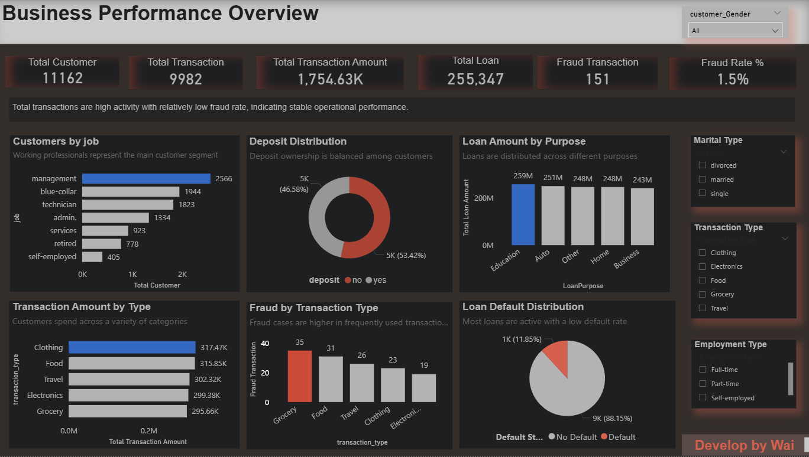
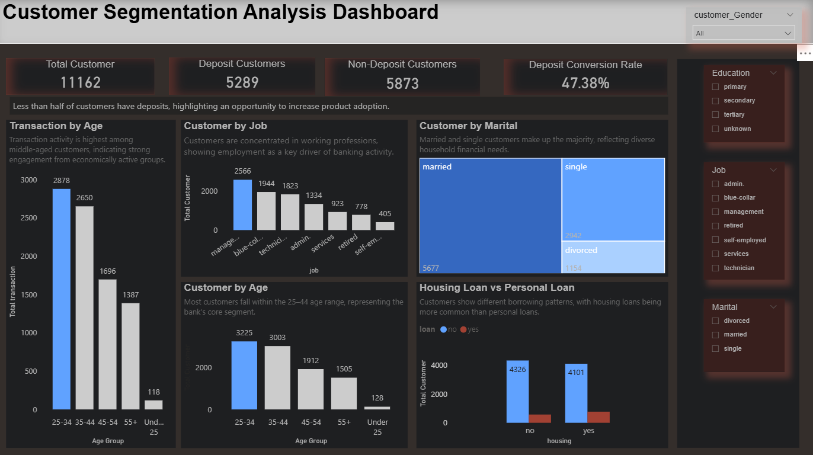
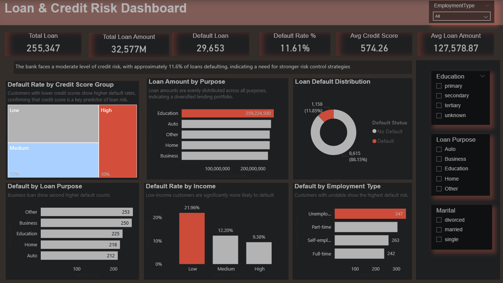
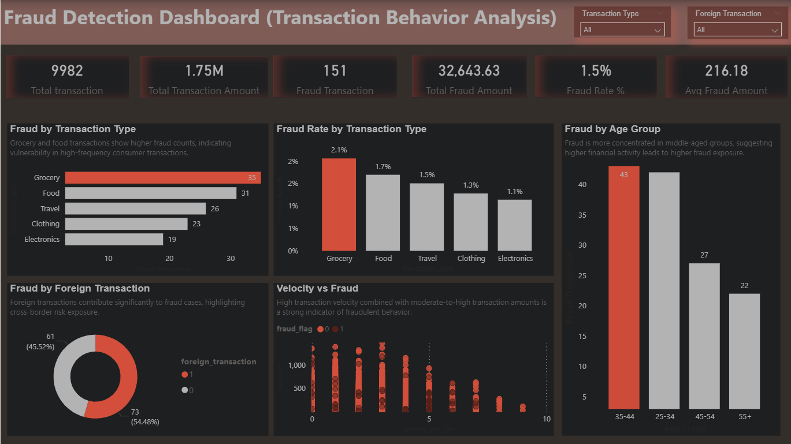

Project Overview
An integrated retail banking analytics solution providing visibility into business performance, customer segmentation, credit risk, and fraud behavior.
11K+
Customers
~53%
Without Deposits
~11.6%
Default Rate
4
Dashboard Pages
Business Problem
Without a centralized analytics system, management could not efficiently monitor performance, identify high-risk customers, detect fraud patterns, or support timely strategic decisions.
Project Objectives
- Build a centralized banking analytics dashboard.
- Monitor business KPIs and customer activity.
- Segment customers for better targeting.
- Analyze loan and credit risk patterns.
- Detect fraud-related transaction behavior.
- Support data-driven business strategy.
Business Questions
- How is overall bank performance?
- Which customer segments contribute most to growth?
- Which customers show higher credit risk?
- What patterns are associated with fraudulent transactions?
- How can customer value and product adoption improve?
Analytical Approach
Collected and prepared banking datasets, cleaned and transformed data with SQL and Power Query, built the analytical model, created Power BI KPIs, and developed dashboards for business performance, segmentation, risk, and fraud.
Dashboard




Key Insights
- The bank serves over 11K customers with strong transaction activity.
- Deposit conversion remains below 50%, indicating product-adoption opportunity.
- The loan default rate is moderately high at approximately 11.6%.
- Fraud is relatively low overall, but transaction velocity and foreign transactions show stronger signals.
- Working-age and employed customer groups are the most active growth segment.
Business Recommendations
- Increase deposit conversion through targeted marketing and personalized products.
- Use customer segmentation for cross-selling and targeting.
- Strengthen credit-risk controls and early-warning systems.
- Enhance fraud monitoring for high-risk transaction patterns and foreign transactions.
- Use centralized dashboards to support timely management decisions.
Data Limitations
This portfolio project simulates a real-world retail banking analytics system.
Business Value
The project demonstrates an end-to-end, business-focused analytics workflow that connects data preparation and modeling with KPI development, visualization, insight generation, and practical decision support.